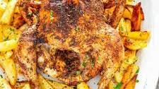

Grilled Chicken with Potatoes

Description
Grilled Chicken is a very popular recipe made with chicken, hung curd and spices like
cumin powder and black pepper. It is a perfect chicken recipe for a quick meal and will
be loved by everyone for its amazing flavours. Garlic paste adds a piquant aroma and flavour to this dish.
Ingredients (for 4 people)
- 4 chicken breasts
- 5 potatoes (approx), washed and cut into wedges
- 1 teasp. paprika
- Sea salt, olive oil
- Sprigs of rosemary
- Juice of one lemon
- Seasonal vegetables i.e. broccoli, courgettes and red pepper (chopped finely)
Steps
- Set the oven at Gas Mark 6 200C (400F).
- Place the potato wedges in a bowl. Season with the paprika, sea salt and olive oil. Mix well to give the potatoes an even coating.
- Place on a baking sheet with a few sprigs of rosemary and bake for 45 minutes.
- While they are cooking, prepare the chicken. Heat a heavy pan/grill pan. Season the chicken breasts and drizzles with olive oil and lemon juice.
- Place on the hot pan and brown well on both sides, reduce the heat and continue to cook for 15-20 minutes approx, until fully cooked.
- For the last 5 minutes heat a large pan or wok. Add some oil and stir fry the vegetables for 2-3 minutes.